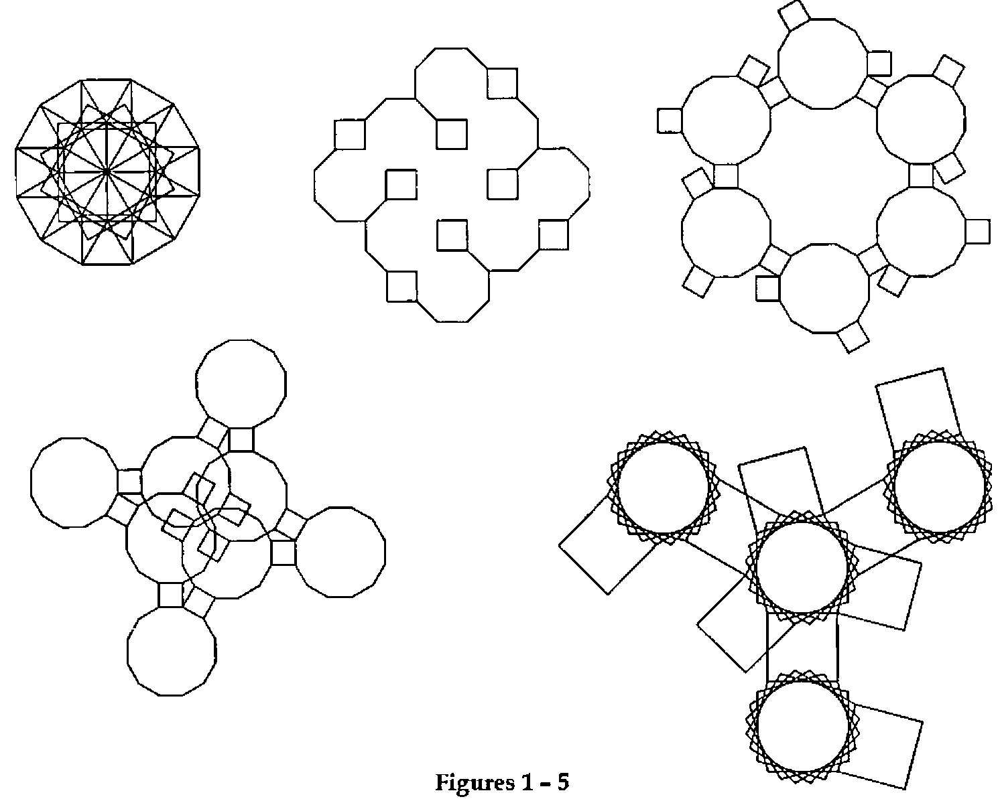
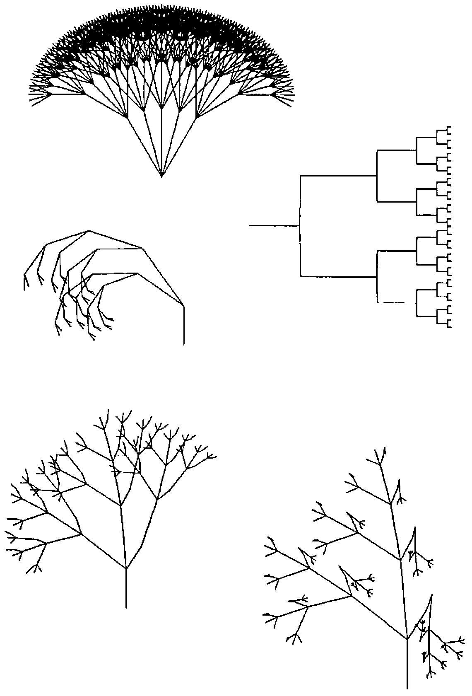
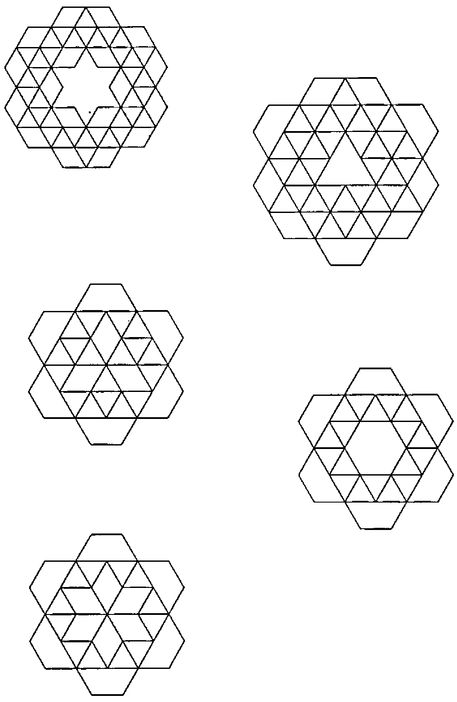

Turtlegraphics with APL2
Vector 13:4, page 104
Transcribed from the printed issue; not yet reviewed. Read it in the PDF of the issue, page 104
Turtlegraphics are well known from the LOGO-System [1]. These graphics are also vector graphics not made by setting the absolute X-Y-coordinates but by relative increments of distances and angles. Perhaps with some new APL2-Idioms we have developed in a short time more than 1500 graphics from different classes.
Derivation of the Formulas¶
We start with the APL2-Syntax (polar form of complex numbers), five points, angle 90 degrees.
Rotation by multiplication and accumulation
Splitting the real and the imaginary part
Transpose for drawing X-Y-graphics
We get a quadrat (square) Q1 and then we take TRANSLATE and MAGNIFY from GRAPHPAK to find the right position on the centre of the screen (100 × 74 pixels).
Without the complex-numbers-syntax we take Cosine and Sine.
An alternative method is
Proof
Different shapes of polygons (different classes)¶
+\×\ 4⍴1D120 ⍝ Triangle
+\×\ 5⍴1D90 ⍝ Quadrat (square)
+\×\ 6⍴1D72 ⍝ Pentagon
+\×\ 7⍴1D60 ⍝ Hexagon
+\×\ 9⍴1D45 ⍝ Octagon
Rosettes¶
The application of the replicate-function generates multiple sets of data.
To get closed figures we need replications and further manipulations.
FIG 1: ⍉+\2 1∘.○○+\∊12/⊂(7+⍳7)/7⍴2 ¯2÷3 4
FIG 2: ⍉+\2 1∘.○○+\∊17⍴⊂(3+⍳4)/4⍴2 ¯2÷8 4
FIG 3: ⍉+\2 1∘.○○+\∊8⍴⊂(5+⍳9)/9⍴3 ¯1÷6
FIG 4: ⍉+\2 1∘.○○+\∊8⍴⊂(5+⍳7)/7⍴3 ¯1÷6
FIG 5: ⍉+\2 1∘.○○+\∊7⍴⊂(5+⍳8)/8⍴3 ¯2.5÷6
Trees [2]¶
VIS: Visibility, first column of the matrix
FIG 6: AX←,⊃.7×∘.,/4⍴(⊂1 1D15 1D¯15 1D30 1D¯30)
AXX←⍉9 11∘.○AX1←2.5D90×∊0,+\×\⊃AX
VIS←~0=AX1 ⋄ ERASE ⋄ DRAW VIS,30+8×AXX
FIG 7: AX←,⊃∘.,/5⍴⊂.5×(.03+(1 2D90 2D¯90.01)(1 2D¯90.01 2D90))
AXX←⍉9 11 ∘.○ AX1←2.5D.0010×∊0,+\×\⊃AX
VIS←~0=AX1 ⋄ ERASE ⋄ DRAW VIS,30+8×AXX
FIG 8: AXX←⍉9 11 ∘.○1D90×∊0,+\×\⊃,/,/.8,[2.5](.8D55 1D36
1D¯65)[⍉1+(5⍴2)⊤¯1+⍳32]
VIS←~(0=AXX[;1])∧(0=AXX[;2])
ERASE ⋄ DRAW VIS,40 +10×AXX
FIG 9: AXX←⍉9 11 ∘.○1D90×∊0,+\×\⊃,/,/.8,[2.5](.8D52 (.7D¯33
1D14).9D5)[⍉1+(4⍴3)⊤¯1+⍳81]
VIS←~(0=AXX[;1])∧(0=AXX[;2])
ERASE ⋄ DRAW VIS,30+10×AXX
FIG 10: AXX←⍉9 11 ∘.○1D90×∊0,+\×\⊃,/,/.8,[2.5](.8D52 (.7D¯33
.5D14 ¯1.1D14).9D5)[⍉1+(4⍴3)⊤¯1+⍳81]
VIS←~(0=AXX[;1])∧(0=AXX[;2])
ERASE ⋄ DRAW VIS,30+10×AXX
Patchworks¶
FIG 11: ⍉+\2 1∘.○○+\∊11⍴⊂(6+⍳10)/2÷(10⍴1 2 1)×.6
FIG 12: ⍉+\2 1∘.○○+\∊11⍴⊂(6+⍳16)/2÷(16⍴1 2 1)×.6
FIG 13: ⍉+\2 1∘.○○+\∊11⍴⊂(2+⍳12)/2÷(12⍴1 2 1)×.6
FIG 14: ⍉+\2 1∘.○○+\∊11⍴⊂(0+⍳7)/2÷(7⍴1 2 1)×.6
FIG 15: ⍉+\2 1∘.○○+\∊11⍴⊂(2+⍳6)/2÷(6⍴1 2 1)×.6

Figures 1 – 5

Figures 6 – 10

Figures 11 – 15
References¶
[1] Harold Abalson & Andrea diSessa: Turtle Geometry, MIT Press, 1986
[2] Manuel Alfonseca: Representation of Fractal Curves by Means of L Systems, APL96, Lancaster (see www.demon.co.uk/apl385/apl96)